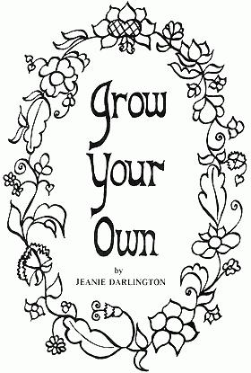

Copyright © 1970. Jeanie Darlington.
All rights reserved.
Published by the BOOKWORMS,
1611 San Pablo Avenue,
Berkeley, California. Reprinted by permission.
Here's yet another selection from Jeanie Darlington's new book on organic gardening. If you enjoy the following as much as most folks enjoyed the six pages we ran in Issue 3 and the four pages that No. 4. carried, you'll want to order a personal copy of GROW YOUR OWN direct from Jeanie at Box 222, Miranda, California 95553. Only $1.75 and worth it.
It feels really good to run your hands through good rich soil, to smell it, and to watch things grow in it. The months of October and November are the best time to start preparing your soil for next year's vegetable garden. This applies both to established garden plots and to new areas. Make sure the plot has all-day sun exposure, because most vegetables really need sun.
California soil has a high clay content and needs a lot of organic matter (leaves, manure, compost) added to it to break it down and lighten it up. This helps in the release of soil nutrients and allows good root growth.
If you're working on an area of hard sun-baked clay, it might be best to wait until the rains have softened it up a bit. But don't ever work with soggy, muddy soil, because if you do, you will end up with big clods of clay that are very hard to break up into small pieces. If the soil crumbles in your hand rather than forming a mud ball, it is in ideal condition to be worked.
A spading fork is a little easier to handle than a spade, because it's lighter and breaks up lumps with less work. But a spade will do. Loosen the soil to a depth of 6 inches by lifting forkfuls of soil, overturning them and letting them shatter into small pieces. If there was a mulch or grass growing on the plot, just turn that under. And if you have some compost, work that in now.
Now sprinkle on a nitrogenous organic fertilizer such as blood meal at 5 lb. per 100 sq. ft. Or get a load of fresh manure from a stable and spread it at a rate of 150 lb. per 250 sq. ft. Too much really can't hurt. Then sprinkle on 5 lbs. of bone meal or 10 lbs. of phosphate rock per 100 sq. ft. to supply phosphorus. And then 10 lbs. of granite dust or greensand per 100 ft., or something else to supply potash. If you have wood ashes, save them for applying next spring.
There's no need to fork these fertilizers down into the soil. The winter rains will do that for you. But be sure to cover the area with a nice thick blanket of leaves or hay. If your garden has winter crops growing, you can do all of this to the spaces between the rows.
To further improve the soil, you may add all your decomposable kitchen waste to the plot, if you don't have a compost pile. Dig a hole, put the garbage in, mix some soil in with it, and cover it with dirt. It won't smell. However, a nurse from Tacoma suggests that covering the area with a board will keep dogs from digging up fresh garbage if this should happen. You could also apply this idea more systematically by using trenches in case you're the type who forgets where you last dug a hole.
By spring your soil will be mellow and workable. Knowing California soil, you'll probably want to add more compost or manure and more blood meal then. But you won't have much else to do except plant.
If you like to work in conjunction with the moon, it is best to turn sod and work soil when the moon is in the barren signs, such as Leo, Virgo, Gemini and Aquarius. For more information on moon planting, see THE MOON SIGN BOOK, available for $1.50 from Farmer Seed and Nursery, Faribault, Minn. 55021
|
 |
|
|